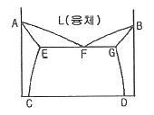

금속재료산업기사 (2011-10-02 기출문제)
1과목: 금속재료
1. FRM용 강화섬유 중 인장강도가 가장 큰 것은?
- 알루미나
- C(PAN)
- C(피치)
- 보른
(정답률: 68%)

2. 주철의 마우러 조직도에서 가장 큰 영향을 미치는 원소는?
- W, Mo
- C, Cr
- CO, Si
- C, Si
(정답률: 80%)
3. 두 금속의 비중 차이가 가장 큰 것은?
- Ni - W
- Ti - Fe
- Li - Ir
- Al - Mg
(정답률: 81%)
4. 초소성 재료를 얻기 위한 조직의 조건을 설명한 것중 옳은 것은?
- 모상임계는 저경각인 편이 좋다.
- 결정립의 모양은 비등방성 이어야 한다.
- 모상입계가 인장분리하기 쉬어야 한다.
- 결정립의 크기는 수 μm 이하이어야 한다.
(정답률: 74%)
5. 실루민에서 조대한 규소 결정을 미세화시키기 위해 금속 나트륨, 알칼리염류 등을 첨가시켜 처리하는 방법은?
- 안정화 처리
- 용체화 처리
- 개량 처리
- 인공시효 처리
(정답률: 65%)
6. 활자금속(Type metal)의 주요 성분은 Pb-Sb-Sn이다. 주요 성분 중 Sn의 주된 역할은?
- 융점이 높아진다.
- 유동성이 나빠진다.
- 인성이 낮아진다.
- 주조조직이 미세화 된다.
(정답률: 80%)
7. 다이캐스팅용으로 쓰이는 아연합금의 원소에 대한 설명으로 틀린 것은?
- Al은 유동성을 개선한다.
- Cu는 임간부식을 억제한다.
- Li은 길이변화에 큰 영향을 준다.
- Mg을 많이 첨가하면 복잡한 형상주조에 좋다.
(정답률: 76%)
8. 금속에서 결정의 최소단위를 무엇이라 하는가?
- 연신율
- 단결정
- 단위격자
- 결정입계
(정답률: 74%)
9. 실리콘(Si), 게르마늄(Ge)과 같은 반도체 대료의 원자 결합은?
- 이온결합
- 공유결합
- 금속결합
- 원자결합
(정답률: 67%)
10. 전자기 재료에 사용되고 있는 Ni - Fe계 실용 합금이 아닌 것은?
- 인바
- 엘린바
- 두랄루민
- 플래티나이트
(정답률: 80%)
11. 철강의 5대 원소에 해당되지 않는 것은?
- S
- Si
- Mn
- Mg
(정답률: 86%)
12. 잔류자속밀도가 작으며 발전기, 전동기 등의 철심 재료에 가장 적합한 강은?
- 규소강(silicon steel)
- 자석강(magnetic steel)
- 불변강(invariable steel)
- 자경강(self hardening steel)
(정답률: 80%)
13. 수소 저장용 합금에 대한 설명으로 틀린 것은?
- 수소를 흡장할 때 팽창하고, 방출할 때는 수축한다.
- 수소 저장용 합금은 수소가스와 반응하여 금속수소화물이 된다.
- 수소가 방출된 금속수소화물은 원래의 수소 저장용 합금으로 되돌아간다.
- 수소로 인하여 전기저항이 완전히 0(zero)이 되는 합금을 말한다.
(정답률: 74%)
14. 스테인리스강에 관한 설명 중 옳은 것은?
- 탄소강과 저합금강보다 녹이 잘 슬고 얼룩이 심하다.
- 페라이트계 스테인리스강은 열처리에 의해 재질을 개선한다.
- Cr의 함량이 12% 이하를 함유한 강을 스테인리스강이라 한다.
- 스테인리스강은 Cr에 의해 부동태화 하기 때문에 표면을 보호한다.
(정답률: 71%)
15. 티타늄에 관한 설명 중 틀린 것은?
- 열 및 도전율이 낮다.
- 불순물에 의한 영향이 거의 없다
- 300℃근방의 온도구역에서 강도의 저하가 명백히 나타난다.
- 활성이 커서 고온산화와 환원 제조시에 취급이 곤란한 원인이 된다.
(정답률: 60%)
16. 황동의 상태도에서 Zn의 함유량에 따라 α, β, γ, δ, ε, η 의 6상이 존재한다. 이들 조합 중 공업용으로 상용되는 두 가지의 상(phase)은?
- α, α + β
- β, β + δ
- γ, γ + ε
- ε, ε + η
(정답률: 79%)
17. 비정질합금의 특성을 설명한 것 중 틀린 것은?
- 구조적으로 장거리의 규칙성이 없다.
- 불균질한 재료이고 결정이방성이 존재한다.
- 전기저항이 크고 그 온도의 의존성은 작다.
- 강도가 높고 연성도 크나 가공경화는 일으키지 않는다.
(정답률: 70%)
18. 주철의 특성을 설명한 것 중 틀린 것은?
- 주조성이 우수하다.
- 인성이 매우 우수하다.
- 진동을 흡수하는 특성이 있다.
- 파면에 따라 회주철, 백주철, 반주철로 분류한다.
(정답률: 58%)
19. 0.035% S(황)을 넣어 강도를 희생시키고 쾌삭성을 개선한 모넬 메탈(Monel metal)은?
- R Monel
- K Monel
- H Monel
- KR Monel
(정답률: 63%)
20. 순철의 변태에 대한 설명 중 틀린 것은?
- A3 변태점과 A4 변태점은 동소변태이다.
- 탄소함유량이 증가하면 A3 변태점은 낮아진다.
- A2 변태점을 시멘타이트의 변태선이라 한다.
- A1 변태선을 공석선이라 하며 약 763℃ 이다.
(정답률: 44%)
2과목: 금속조직
21. 3원계 상태도에서 공정점의 자유도는?
- 0
- 1
- 2
- 3
(정답률: 72%)
22. 냉간가공으로 금속이 받는 성질의 변화는 풀림처리에 의하여 가공 전의 상태로 돌아가려는 경향을 가지고 결정립의 모양이나 결정의 방향에 변화를 일으키지 않고 물리적, 기계적 성질만 변화하는 과정은?
- 연화
- 회복
- 재결정
- 결정립 성장
(정답률: 86%)
23. 조밀육방격자에 대한 설명 중 틀린 것은?
- 원자충전율은 74%이다.
- 축비(c/a)는 약 1.63이다.
- 원자배위수는 12개이다.
- Ag는 조밀육방격자이다.
(정답률: 79%)
24. 면심입방격자의 쌍정면에 해당되는 것은?
- {111}
- {112}
- {110}
- {123}
(정답률: 79%)
25. 마텐자이트가 경도가 큰 이유가 아닌 것은?
- 결정의 미세화
- 시효경화 효과
- 급냉으로 인한 내부응력
- 과포화 탄소고용에 의한 격자 강화
(정답률: 47%)
26. 석출경화의 기본 원칙에 해당되지 않는 것은?
- 석출물의 부피 분율이 커야 한다.
- 석출물 입자의 형상이 구형에 가까워야 한다.
- 석출물 입자의 크기가 미세하고 그 수가 많아야 한다.
- 석출물은 연속적으로 존재해야만 하는 반면에 기지상은 불연속적이어야만 한다.
(정답률: 68%)
27. 전위에 대한 설명으로 옳은 것은?
- 전위의 상승운동은 온도에 무관하다.
- 전위 결함은 원자공공, 크라디온(Crowdion)등이 있다.
- 칼날전위선은 버거스 벡터(Burgers vector)와 평행하다.
- 전위의 존재로 인해 발생되는 에너지를 변형 에너지(strain energy)라 한다.
(정답률: 69%)
28. 어떠한 합금에서 규칙-불규칙 변태가 일어났는가를 조사할 때 가장 적당한 실험은?
- 투자율검사
- 시차열분석 검사
- 전자현미경 조직검사
- X - 선 회절검사
(정답률: 74%)
29. FCC 결정구조를 갖는 구리 금속의 단위격자의 격자상수가 0.361nm일 때 면간거리 d210 은 얼마인가?
- 0.16nm
- 0.18nm
- 1.10nm
- 1.20nm
(정답률: 47%)
30. 재결정을 좌우하는 인자에 관한 설명으로 옳은 것은?
- 변형량이 증가함에 따라 재결정율은 감소한다.
- 변형량이 작을수록 재결정온도는 낮아진다.
- 순도가 높은 금속일수록 재결정온도는 낮아진다.
- 어닐링 온도 및 시간을 같이하면 초기 입자의 지름이 클수록 재결정을 일으키는데 필요한 변형량은 감소한다.
(정답률: 58%)
31. 다른 종류의 원자 A, B가 접촉면에서 서로 반대방향으로 이루어지는 확산은?
- 반응확산
- 전위확산
- 자기확산
- 상호확산
(정답률: 77%)
32. 응고시 체적 팽창이 발생하는 금속은?
- Sn
- Sb
- Pb
- Zn
(정답률: 58%)
33. 펄라이트변태를 설명한 것 중 틀린 것은?
- Fe3C를 핵으로 발생 성장한다.
- 결정립의 크기가 크면 펄라이트 변태가 촉진된다.
- 합금 원소에 따라 펄라이트 변태 온도는 증가 또는 감소한다.
- 변태초기에는 반드시 Fe3C가 나타나나 후기에는 조성에 따라 특수 탄화물 등으로 변화한다.
(정답률: 52%)
34. 격자간 원자와 원자공공이 한 쌍으로 된 결함은?
- 체적 결함
- 불순물위자
- 쇼트키 결함
- 프렌켈 결함
(정답률: 77%)
35. 다음의 금속강화 방법 중 고온에서 효과가 가장 좋은 방법은?
- 급냉하여 강화시켰다.
- 압연가공하여 강화시켰다.
- 고용체를 석출시켜 강화시켰다.
- 고용원소를 고용시켜 강화하였다.
(정답률: 55%)
36. 용매 중에 용질이 녹아들어 있는 상태에서 국부적으로 농도차이가 있을 경우 시간의 경과에 따라 농도의 균일화가 일어나는 현상은?
- 반사
- 대류
- 확산
- 복사
(정답률: 70%)
37. 다음 상태도에서 액상선은?

- DG선
- BF선
- EC선
- GF선
(정답률: 84%)
38. 철의 자기변태에 대한 설명 중 옳은 것은?
- 금속의 결정구조가 변화하는 것을 말한다.
- 철의 자기변태 온도는 약 780℃정도 이다.
- 자기변태가 일어나는 점을 동소변태점이라 한다.
- 일정한 온도에서 급격히 비연속적으로 일어난다.
(정답률: 60%)
39. 전기 및 열전도도가 우수한 순서대로 나열된 것은?
- Au ＞ Cu ＞ Ag ＞ Fe ＞ Al
- Cu ＞ Ag ＞ Au ＞ Al ＞ Fe
- Ag ＞ Cu ＞ Au ＞ Al ＞ Fe
- Ag ＞ Au ＞ Cu ＞ Fe ＞ Al
(정답률: 69%)
40. 50%의 A-B 합금은 면심입방규칙격자로서 7.5개가 A원자이고, 4.5개가 B원자일 때 A의 단범위 규칙도(σ)는?
- -0.125
- 0.125
- -0.25
- 0.25
(정답률: 45%)
3과목: 금속열처리
41. 염욕이 갖추어야 할 조건에 해당되지 않는 것은?
- 염욕의 순도가 높고 유해 불순물이 포함하지 않는 것이 좋다.
- 가급적 흡수성이 커야 하고, 염욕의 분해를 촉진해야 한다.
- 열처리 후 제품의 표면에 정착한 염의 세정이 좋아야 한다.
- 열처리 온도에서 염욕의 점성이 적고, 증발 휘산량이 적어야 한다.
(정답률: 80%)
42. 강의 최고 담금질 경도를 좌우하는 요소는?
- 강재의 형상
- 합금 원소의 무게
- 강 중의 탄소함량
- 오스테나이트의 결정입도
(정답률: 82%)
43. 침탄 경화시 침탄 깊이에 영향을 미치지 않는 것은?
- 가열온도
- 가열시간
- 침탄제
- 가열로
(정답률: 74%)
44. 공석강을 약 850℃에서 오스테나이트화 한 후 550℃이하의 온도로 항온변태시키면 나타나는 조직은?
- 페라이트
- 스텔라이트
- 베이나이트
- 레데뷰라이트
(정답률: 71%)
45. TTT선도(diagram)에서 T, T, T 가 의미하는 것은?
- 시간, 온도, 변태
- 시간, 변태, 융점
- 온도, 변태, 조직
- 온도, 융점, 조직
(정답률: 81%)
46. 열처리 전·후처리에 사용되는 설비 중 6각 또는 8각형의 용기에 공작물과 함께 연마제, 콤파운드를 넣고 회전시켜 표면을 연마시키는 방법은?
- 버프 연마
- 배럴 연마
- 쇼트 피닝
- 액체 호닝
(정답률: 80%)
47. 항온 열처리에 해당되지 않는 것은?
- 시간담금질
- 오스포밍
- 마템퍼링
- 오스템퍼링
(정답률: 66%)
48. 다음의 강을 완전 풀림을 하게 되면 나타나는 조직으로 옳은 것은?
- 아공석강 → 헤드필드강 + 레데뷰라이트
- 과공석강 → 시멘타이트 + 층상펄라이트
- 공석강 → 페라이트 + 레데뷰라이트
- 과공정 주철 → 페라이트 + 스텔라이트
(정답률: 76%)
49. 알루미늄합금 중 압연 및 압축 등의 연신재보다 알루미늄 합금 주물의 경우가 용체화처리 시간이 5~10배 긴 이유로 옳은 것은?
- 연신재가 제품이 길고 크기 때문에
- 주물제품의 장입 중량이 크기 때문에
- 주물제품의 표면이 거칠어 열 흡수가 빠르기 때문에
- 주물제품의 조직이 조대하고 석출상의 크기가 크며 편석이 심하기 때문에
(정답률: 78%)
50. 알루미늄, 마그네슘 및 그 합금에 질별 기호 중 가공 경화한 것의 기호로 옳은 것은?
- F
- H
- O
- W
(정답률: 78%)
51. 침탄 온도 927℃로 저탄소강에 8시간 침탄할 때 생성되는 침탄층의 깊이는 약 몇 mm인가? (단, 927℃ 일 때 확산 정수 값은 0.635 이며 Harris의 방정식을 이용한다.)
- 1.80
- 2.85
- 3.80
- 4.85
(정답률: 38%)
52. 전기 저항식 온도계에 관한 설명 중 틀린 것은?
- 1200℃이상의 고온 측정용에 적합하다.
- 측온 저항체에는 백금선, 니켈선, 구리선 등이 있다.
- 금속의 전기 저항은 1℃ 상승하면 약 0.3 ~ 0.6% 증가한다.
- 온도 상승에 따라 금속의 전기 저항이 증가하는 현상을 이용한 것이다.
(정답률: 57%)
53. 강의 마텐자이트조직이 경도가 큰 이유가 될 수 없는 것은?
- 결정의 미세화
- 급냉으로 인한 내부응력
- 탄소원자에 의한 Fe격자의 강화
- 확산 변태에 의한 시멘타이트의 분리
(정답률: 60%)
54. 석출 경화형 구리 합금인 Cu-Be합금의 용체화 처리 방법으로 가장 적절한 것은?
- 가능한 한 최저온도 이하에서 처리한다.
- 가능한 한 최고온도를 초과하여 처리한다.
- 가능한 한 가장 늦은 속도로 담금질해야 한다.
- 가능한 한 용질 원자 Be이 충분히 용해되도록 한다.
(정답률: 88%)
55. 합금하지 않은 구상흑연 주철의 동력 제거 온도의 범위는 약 몇 ℃정도 인가?
- 450~500℃
- 510~565℃
- 570~620℃
- 630~685℃
(정답률: 52%)
56. 열처리 과정에서 나타나는 조직 중 용적 변화가 가장 큰 것은?
- 마텐자이트(Martensite)
- 펄라이트(Pearlite)
- 소르바이트(Sorbite)
- 오스테나이트(Austenite)
(정답률: 84%)
57. 마텐자이트(Martensite)조직을 얻는 방법에 대한 설명으로 옳은 것은?
- 오스테나이트를 급냉한 후 심냉처리를 한다.
- 오스테나이트를 정상적으로 평형냉각을 한다.
- TTT곡선 Nose 이하 Ms 이상에서 항온 유지시킨다.
- TTT곡선 Nose 이상에서 오스테나이트를 항온 유지시킨다.
(정답률: 65%)
58. 구조에 따른 가열로의 분류가 아닌 것은?
- 원통로
- 연속로
- 전기로
- 배치로
(정답률: 63%)
59. 공석강에 존재하는 대부분의 오스테나이트(Austenite)가 실온까지 담금질하는 동안 마텐자이트로 변태하지 않고 남아 있는 것은?
- 잔류 오스테나이트
- 시멘타이트
- 페라이트
- 투르스타이트
(정답률: 91%)
60. 다음의 냉각제 중 550~720℃에서 냉각능력이 가장 큰 냉각제는?
- 10% NaCl액
- 10& NaOH액
- 10% Na2CO3액
- 비눗물(2%)
(정답률: 60%)
4과목: 재료시험
61. 비틀림 시험을 통하여 얻을 수 있는 기계적 성질로 틀린 것은?
- 강성계수
- 비틀림 강도
- 비틀림 파단계수
- 비틀림 경도
(정답률: 57%)
62. 방사선을 취급할 때 외부 피폭을 방호하기 위한 3원칙에 해당하지 않는 것은?
- 방사선의 선원이 무거운 질량의 것으로 사용한다.
- 방사선체 노출 시간, 즉 사용 시간을 줄인다.
- 방사선의 선원과 사람과의 거리를 멀리한다.
- 방사선의 선원과 사람사이에 차폐물을 설치한다.
(정답률: 83%)
63. 초음파의 종류 중 몇 파장 정도의 두께를 갖는 금속 내에 존재하며 박판의 결함 검출에 이용되고, 유도 초음파라고 불리는 초음파는?
- 판파
- 종파
- 횡파
- 표면파
(정답률: 53%)
64. 다음 중 비파괴시험이 아닌 것은?
- 방사선투과시험
- 초음파탐상시험
- 자분탐상시험
- 충격시험
(정답률: 86%)
65. 마모시험기의 형식이 아닌 것은?
- 압축 마모
- 회전 마모
- 슬라이딩 마모
- 왕복 슬라이딩 마모
(정답률: 68%)
66. 탄소강의 불꽃시험에서 강재에 함유된 탄소량이 증가할 때 나타나는 불꽃의 특성으로 틀린 것은?
- 유선의 숫자가 증가한다.
- 파열의 숫자가 감소한다.
- 유선의 길이가 감소한다.
- 파열의 꽃잎모양이 복잡해진다.
(정답률: 69%)
67. 압축 시험에 관한 설명으로 틀린 것은?(단, P는 하중, A0 은 초기 단면적이다.)
- 압축 응력은 A0 / P (N/mm3)으로 나타낸다.
- 압축 시험은 인장 시험과 반대 방향으로 하중이 작용한다.
- 압축 시험은 주로 내압(耐壓)에 사용되는 재료에 적용된다.
- 압축강도는 취성이 있는 재료를 시험할 때 잘 나타난다.
(정답률: 53%)
68. 크리프 시험에 관한 설명으로 틀린 것은?
- 용융점이 낮은 금속은 상온에서도 크리프 현상이 발생한다.
- 크리프는 일반적으로 온도, 응력 및 시간의 함수로 표시된다.
- 어떤 시간 후에 크리프가 정지하는 최대 응력을 크리프 한도가 한다.
- 재료가 주기적이고 반복적인 하중을 가하여 파괴되는 현상이다.
(정답률: 66%)
69. 회전 굽힘형 피로시험에서 주의해야 할 사항 중 틀린 것은?
- 시험편이 회전하기 전에 굽힘 하중을 가한다.
- 회전수 적산계와 전동 모터의 이상 유·무를 점검한다.
- 시험편이 부식되거나 표면부에 흠이 생기지 않도록 한다.
- 시험편을 정확하게 고정시켜 편심에 의한 진동을 방지한다.
(정답률: 87%)
70. 표점거리가 50mm, 두께가 2mm, 평행부 나비(폭)가 25mm인 강판을 인장시험 하였을 때 최대하중은 2500kgf이었고 파단 후 늘어난 길이가 60mm였을 때 재료의 인장강도 몇 kgf/mm2인가?
- 30
- 40
- 50
- 60
(정답률: 53%)
71. 금속 재료의 부식액 중 부식할 금속과 부식액의 연결이 옳은 것은?
- Al 합금 - 왕수
- Zn 합금 - 염산 용액
- 구리, 황동 - 질산알콜 용액
- 철강 - 수산화나트륨 용액
(정답률: 49%)
72. 자분탐상검사의 특징을 설명한 것 중 옳은 것은?
- 시험체는 모든 재료에 적용이 가능하다.
- 시험체의 크기 등에 제한을 많이 받는다.
- 사용하는 자분은 시험체 표면의 색과 대비가 잘되는 구별하기 쉬운 색을 선정한다.
- 시험체 내부 또는 내부 깊숙한 곳에 존재하는 균열과 같은 결함 검출에 우수하다.
(정답률: 65%)
73. 로크웰 경도시험을 설명한 것 중 틀린 것은?
- 다이아몬드 콘의 원추의 꼭지각은 120˚이다.
- 연한 재료에는 다이아몬드 콘을 사용한다.
- B스케일과 C스케일 등으로 표시한다.
- B스케일과 C스케일의 경우 기준 하중은 10kg 이다.
(정답률: 71%)
74. 무색, 무미, 무취로서 연료의 불완전 연소로 인하여 생성되는 것으로 인체에 해로운 가스는?
- CO
- SO2
- NH4
- Cl
(정답률: 79%)
75. 쇼어 경도 시험할 때의 유의 사항 중 틀린 것은?
- 시험은 안정된 위치에서 실시한다.
- 다이아몬드선단의 마모여부를 점검한다.
- 시험편에 기름 등이 묻지 않도록 해야 한다.
- 고무와 같은 탄성률의 차이가 큰 재료를 선택하여 시험한다.
(정답률: 83%)
76. 피로시험으로부터 구한 S-N 곡선에서 S와 N은 각각 무엇을 나타내는가?
- 강도와 경도
- 변형과 반복횟수
- 응력과 피로한계
- 응력과 반복횟수
(정답률: 79%)
77. 금속을 현미경 조직 검사하는 주목적으로 옳은 것은?
- 입계면의 강도 조사
- 금속 입자의 크기 조사
- 원소의 배열상태 조사
- 조성, 성분 및 중량 조사
(정답률: 64%)
78. 전단시험에서 단순한 인장만의 외력을 받고 있는 시험편에서 최대 전단력이 발생하는 각도(θ)는?
- 0˚
- 45˚
- 90˚
- 180˚
(정답률: 63%)
79. 강의 현미경 조직사진 100배의 배율에서 1 in2 내에 64개의 결정립이 존재한다면 ASTM에 의한 입도번호(N)는?
- 5
- 7
- 9
- 11
(정답률: 64%)
80. 금속재료의 미세조직을 금속현미경을 사용하여 광학적으로 관찰하고 분석하기 위한 시료 준비의 순서로 옳은 것은?
- 마운팅(성형)→연마→부식→시험편 채취
- 부식→마운틴(성형)→연마→시험편 채취
- 연마→시험편 채취→부식→마운팅(성형)
- 시험편 채취→마운틴(성형)→연마→부식
(정답률: 77%)